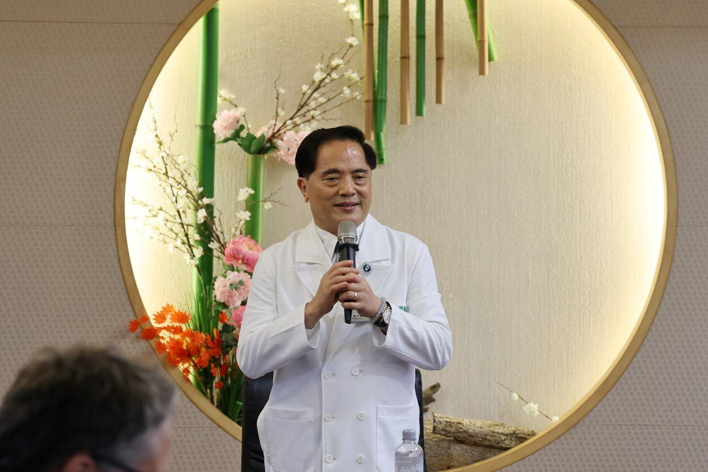

深耕災難醫療創新解方！MIT國際專家團隊實地參訪花蓮慈濟醫院

可樂電子報小編/編輯
參與「Hualien REAP Forum 2026」國際論壇的生命科學與健康創新專家團隊，於11日下午專程參訪花蓮慈濟醫院。慈濟團隊現場展示人道援助、社區韌性、iDMAT災難應變系統、醫療無人機及中西醫合療成果，向國際交流東部偏鄉醫療與災難救護的創新經驗。

花蓮慈濟醫院院長林欣榮與副院長李啟誠親自接待國際代表。林欣榮院長表示，慈院建院40年來，從早年解決東部醫療資源匱乏，到如今積極投入細胞治療、精準醫療與中西醫合療，持續結合前瞻科技與跨專業整合，守護花蓮及全台民眾的健康福祉。

針對災難救護，花蓮慈院AI中心分享源自太魯閣號事故經驗開發的「iDMAT災難應變系統」，成功將單筆傷患紀錄時間由5.9分鐘縮短至2.7分鐘，並於0403花蓮地震實際發揮效能；同時介紹2025年馬太鞍溪堰塞湖洪災期間，運用無人機突破交通中斷投遞急難藥物的成功照護模式。

MIT REAP共同創辦人Scott Stern教授對花蓮慈院在災難應變與中西醫整合照護的成就給予高度評價，表示將把相關經驗帶回麻省理工學院交流。李啟誠副院長也強調，慈院將持續吸取國際多元思維，精進災難醫療與偏鄉照護品質。